主張（一文）
燃え尽きは、出し切った反動だけじゃない。大きいのは周囲との熱量の温度差で、変えられない他人の熱より、自分で動かせる熱量に関心を向け直そう。
映像は、この一文を最初の 15 秒で言い切り、残りで「なぜそうなるか」「どうするか」を重ねます。出し切った反動もあり得るという留保（「だけじゃない」）は消さず、結びは筆者自身の言い切り（「自分の熱量にアクセルを踏もう」）で終えます。個人の経験を一般論に広げず、原稿が述べる範囲にとどめます。
対象視聴者と持ち帰ってほしいこと
想定する視聴者：チームや依頼先との温度差で、自分だけが空回りしているように感じたことがある人。
持ち帰ってほしいこと：
- 疲れだけが燃え尽きの原因とは限らない（反動だけじゃない）。
- 相手の熱は外から変えられない。だから、関心を自分で動かせることへ向け直す。
- 試したいことを手元にいくつも持ち、自分の熱量にアクセルを踏む。
視聴者の数や属性の調査にもとづく設定ではなく、原稿の語り口から企画側が置いた想定です。
全体構成と尺配分
| 章 | カット | 役割（一行） | 見せ場 | 尺（目安） |
|---|---|---|---|---|
| 1 状況 | 01–02 | 一番動いている人がズレて見える。答え＝温度差を先に言い切る | 熱量と他人事の二分割 → 「温度差」の巨大 1 語 | 約15秒 |
| 2 原因と影響 | 03–05 | 確認が進まない → 軽く扱われてすり減る → 能力ではなく熱量の差 | 球が壁で止まる／面が欠ける／主役の入れ替え | 約29秒 |
| 3 転換と対処 | 06–07 | 他人の熱は変えられない → 自分へ → 試したいことを複数持つ | ピント送り／色が戻る炎の窓 | 約20秒 |
| 4 展望と結び | 08–09 | 起点力 → 自分の熱量にアクセルを踏もう（言い切りで終える） | 点から巨大な 1 語／水銀が走り面が染まる | 約17秒 |
| 5 エンド | 10 | ロゴのみ | ライムの全面にロゴ | 5.5秒 |
| カット | 見出し | 時間 | 尺 | 声の字数 | 字/秒 | 画面文言の字数 |
|---|---|---|---|---|---|---|
| 01 | 一番動いている人が、ズレている気がしてくる | 0:00–0:08 | 8秒 | 37 | 4.6 | 27 |
| 02 | 疲れだけじゃない。温度差。 | 0:08–0:15 | 7秒 | 42 | 6.0 | 25 |
| 03 | 打ち返しても、止まる。 | 0:15–0:25 | 10秒 | 52 | 5.2 | 27 |
| 04 | 軽く扱われると、すり減る。 | 0:25–0:35 | 10秒 | 52 | 5.2 | 17 |
| 05 | 能力の差じゃない。熱量の差。 | 0:35–0:44 | 9秒 | 47 | 5.2 | 23 |
| 06 | 他人の熱は変えられない。自分へ。 | 0:44–0:54 | 10秒 | 44 | 4.4 | 33 |
| 07 | 試したいことを、いくつも持つ。 | 0:54–1:04 | 10秒 | 56 | 5.6 | 26 |
| 08 | 何を始めたいか。起点力。 | 1:04–1:13 | 9秒 | 49 | 5.4 | 43 |
| 09 | 自分の熱量に、アクセルを踏もう。 | 1:13–1:21 | 8秒 | 45 | 5.6 | 32 |
| 10 | エンドロゴ | 1:21–1:26.5 | 5.5秒 | — | — | ロゴのみ |
| 合計 | 86.5秒 | 424 | 5.0 | 253 | ||
合計は約1分26.5秒（本編81秒＋ロゴ5.5秒）。各カットの尺は参考値で、数字は企画側の見積もりです（実際に等速で見て、声を録ってから再調整してください）。字数は空白と改行を除いた数で、「字/秒」はナレーションの密度の目安です。読みやすさの合格判定ではありません。
声・文字・素材の役割分担とナレーション
決めてから絵を作りました。同じ内容を声・文字・素材で重ねず、それぞれの役目を分けています。
| 手段 | 担当する内容 | 担当しない内容 |
|---|---|---|
| 声（ナレーション） | 因果と留保：何が起きて、なぜすり減るか、「だけじゃない」という言い方、結びの言い切り。 | キーワードの反復（文字が担当）。 |
| 文字（キネティック） | 主張の語：熱量／他人事／温度差／すり減る／自分／試したいこと／起点力／アクセル。語と対比、行マスクや面の動きで見せる。 | 説明文の全文。長い文は声に任せる。 |
| 素材（実写・図形） | 図形：温度計・赤と青の面・点と線で温度差を見せる。実写：07 のみ、「手元にある小さな熱」としての炎（小さな窓）。 | 原稿にない出来事の再現。人物・他人の作品・顔や肖像。 |
ナレーション：あり（案）。因果と留保を声で運ぶためです。声の下書きは各カットに載せています。読み手：筆者本人の語り口（落ち着いた、押しつけない調子）。
※ ナレーション音声の生成は、ユーザーが明示的に依頼するまで行いません（この役割分担は音声生成の許可ではありません）。ナレーションなしにする場合は、03・04・06・07 の因果と留保が画面から消えるため、画面文言を増やして尺を見直す必要があります。
企画側／制作側の担当範囲
| 企画側（この一式） | 制作側（引き継ぎ先） |
|---|---|
|
|
音楽・効果音のブリーフ（制作側で制作）
目安116〜124 BPMの明瞭な4拍子。乾いた打楽器と短い低音のアクセントで、面の移動・行マスク・寄りの強さを支える。前半は緊張を含む引き締まった音色、06で低音の重心が変わり、07で温かい鍵盤や軽いシンセを加えて視野が開く。悲壮なピアノ、過度な感動曲、炎の激しさを煽る効果音には寄せない。
03の球の停止、06の視線の転換、09の結論を短いアクセントにする。読む間も拍の推進力を維持し、声の帯域と音量を空ける。完全な無音は設けず、06の転換で一拍薄くする程度。09の結びを邪魔せず、ロゴの4秒の動きと1.5秒の保持まで、全86.5秒を覆って最後に収める。実尺変更時はロゴ末尾まで再編集する。
曲ファイルは制作側が用意し、冒頭・中盤・後半の映像と合わせて試聴して決める。既存曲の無検討な流用はしない。音源未完成は画像・動画素材の引き渡しを止める理由にしない。
カット表・絵コンテ
各カットに「はじめ」「おわり」の 2 コマと、間の動きを記載しています。コマ画は構図のラフで、完成映像の躍動感を確認したものではありません。画面全体を強く動かす前提で、動きは「動き・カメラ」欄に書いています。
一番動いている人が、ズレている気がしてくる
0:00–0:08 / 約8秒 ・ 状況の提示（温度差の実感）

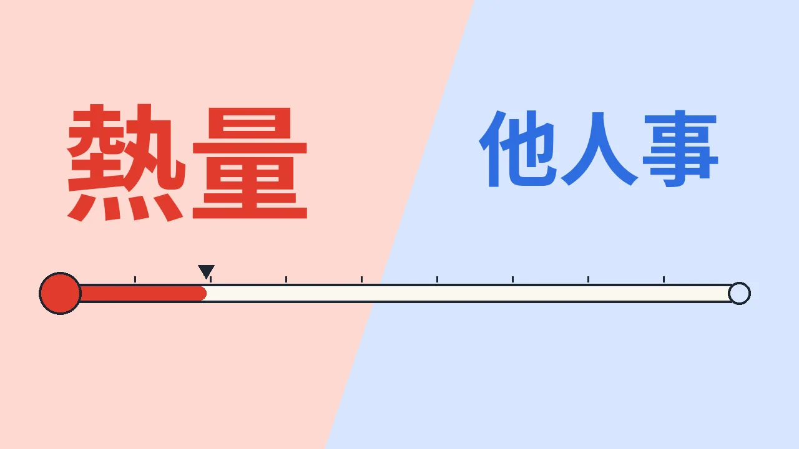

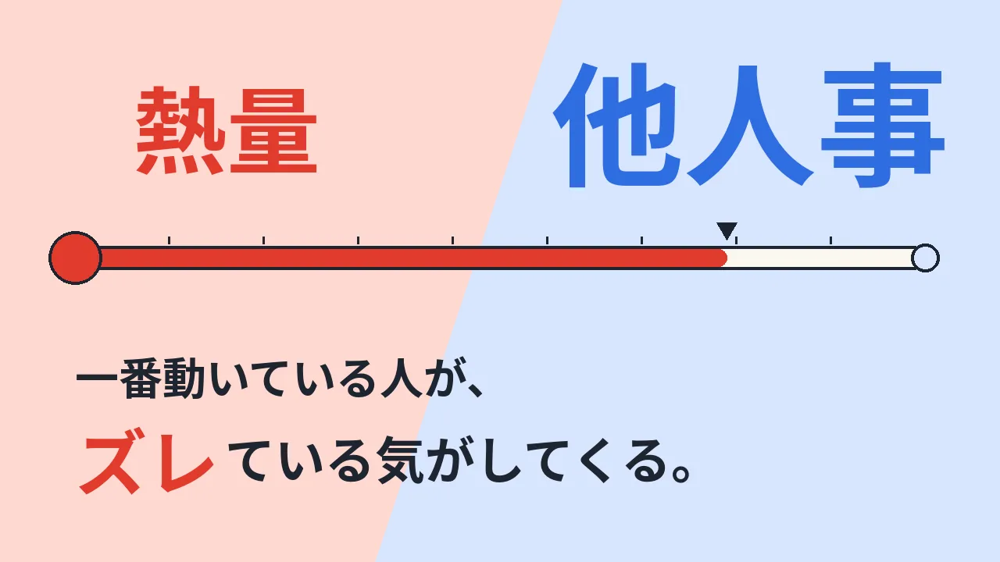
熱量
他人事
一番動いている人が、ズレている気がしてくる。
みんなでやろうと言ったのに、自分だけが必死で、相手はどこか他人事に見える。
声 37字 ／ 画面 27字
はじめ：左右二分割・語は各面の上段に小さく。おわり：赤の語を左上へ縮め、青の面が広がって主文が下段の横一行になる（面の比率と文字サイズの逆転）。
Whip pan（境界面を左へ掃くように切り替え）→ 温度計の線を Pan で右へ 1 往復。主文は行マスクで Dolly in（寄りながら現れる）。
疲れだけじゃない。温度差。
0:08–0:15 / 約7秒 ・ 主張の提示（一文目）

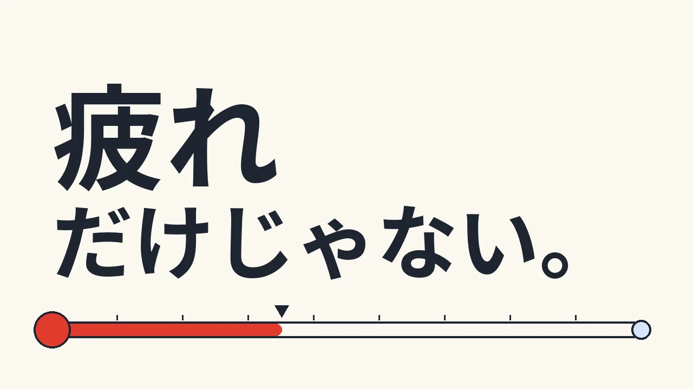

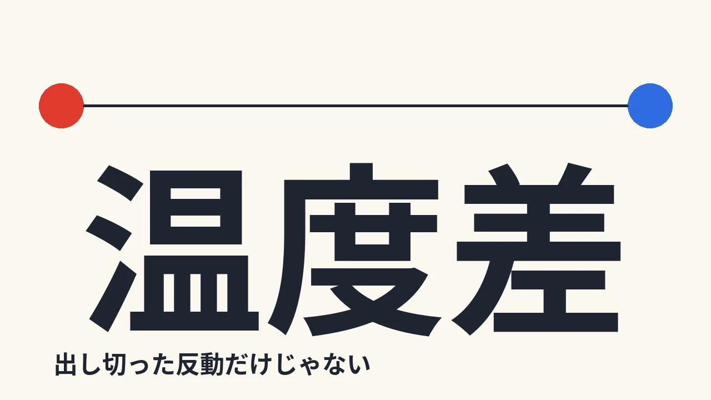
疲れ
だけじゃない。
温度差
出し切った反動だけじゃない
燃え尽きは、出し切った反動だけじゃない。それ以上に大きいのは、周囲との熱量の温度差。
声 42字 ／ 画面 25字
はじめ：2 行・左寄せ・中サイズ。おわり：1 語・中央・最大サイズ。字面の大きさが約 2 倍になり、温度計は上の線（赤点―青点）に役割を移す。
Zoom in で「疲れ」に寄る → 「だけじゃない」を行マスクで Wipe → Smash cut で「温度差」が最大サイズに（Speed ramp：寄りが加速して止まる）。
打ち返しても、止まる。
0:15–0:25 / 約10秒 ・ 温度差の具体（確認が進まない）

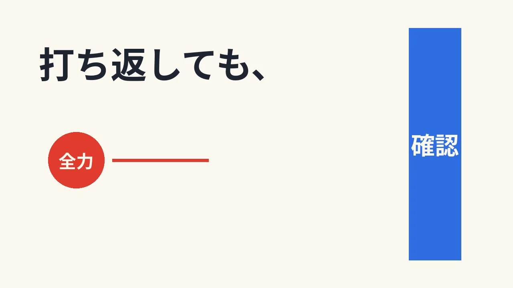

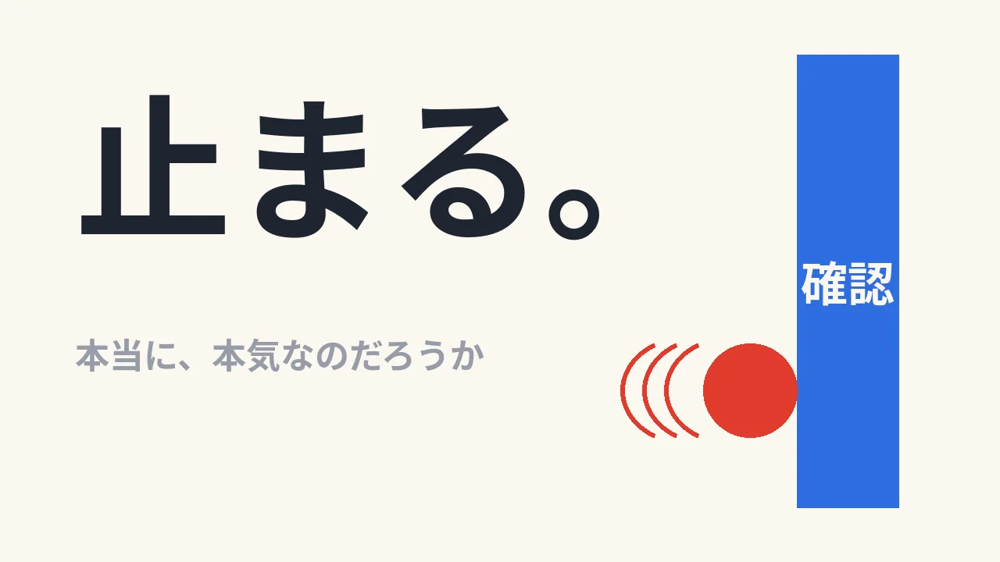
打ち返しても、
全力
確認
止まる。
本当に、本気なのだろうか
確認を頼んでも進まない。全力で打ち返しても、相手のところで止まる。本当に本気なのだろうか、と疑問が湧く。
声 52字 ／ 画面 27字
はじめ：上段に小さな文、横の動線が主役。おわり：主文を最大サイズで左上へ、球と壁は右下へ寄せた対角の構図。
Tracking shot（球を横から追う）→ Speed ramp（壁の手前で加速）→ Smash cut：壁に当たる瞬間に画面全体を一度だけ押し込む（Zoom out 1 回）。「止まる。」は行マスクで叩き込む。
軽く扱われると、すり減る。
0:25–0:35 / 約10秒 ・ 影響（エネルギーの枯渇）

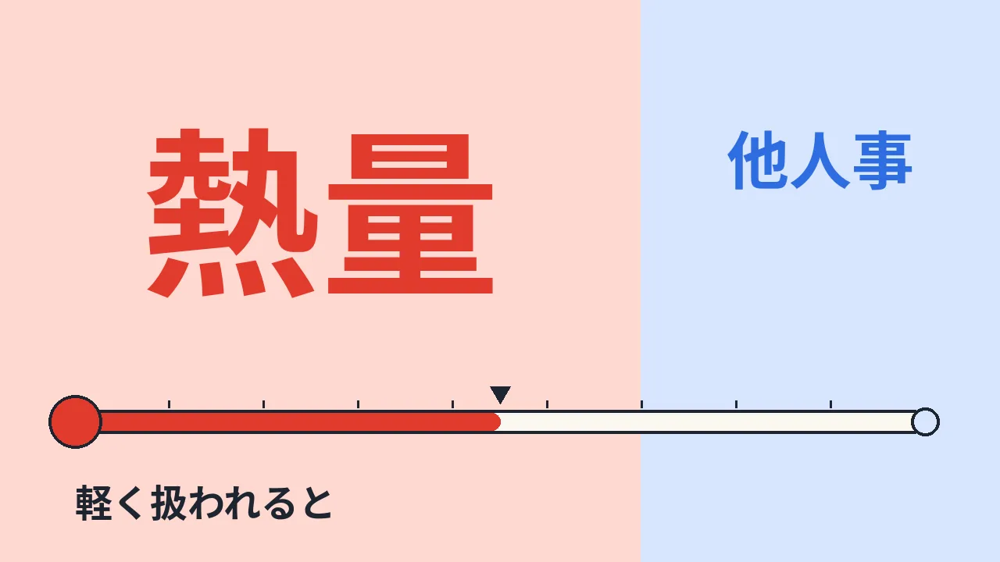

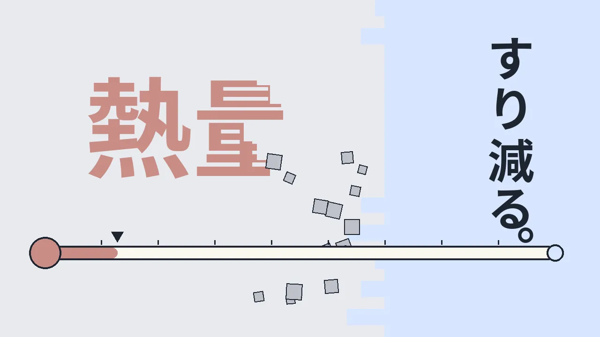
熱量
他人事
軽く扱われると
すり減る。
当事者意識の薄い人から軽く扱われ、やり取りを重ねるたびに、どれだけやる気があっても、心がすり減っていく。
声 52字 ／ 画面 17字
はじめ：二分割・横組み。おわり：縦組み 1 行（すり減る。）が右の面に立ち、横組みの語は左で彩度を落とす。組み方向を横から縦へ切り替える。
Tilt down（面が下へ崩れる動き）。境界の欠けは階段状のブロックとして落下（タイル崩し）。文字そのものは崩さず、面と線だけが削れる。縦組みは上から行マスクで Wipe。
能力の差じゃない。熱量の差。
0:35–0:44 / 約9秒 ・ 論点の整理（能力ではなく熱量）

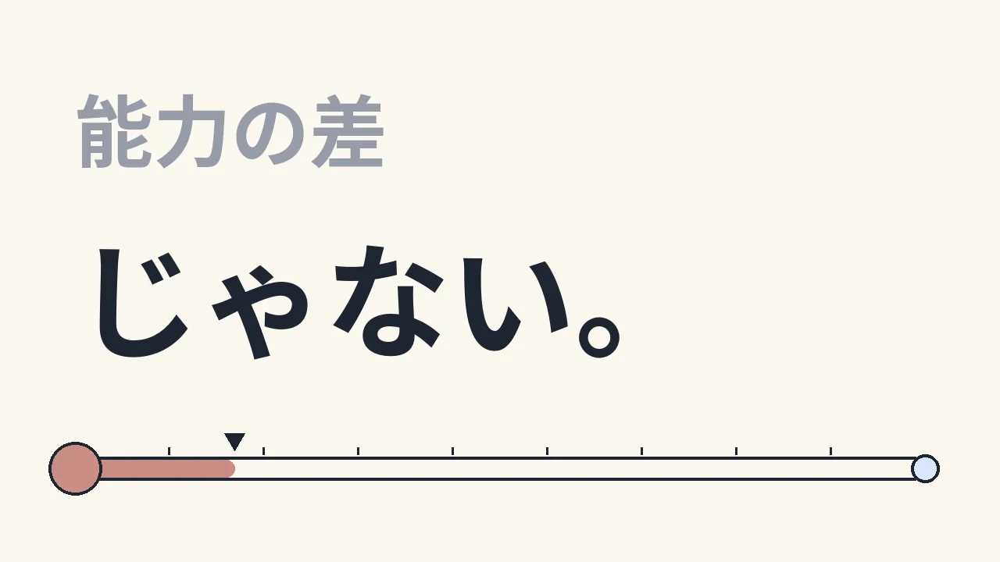

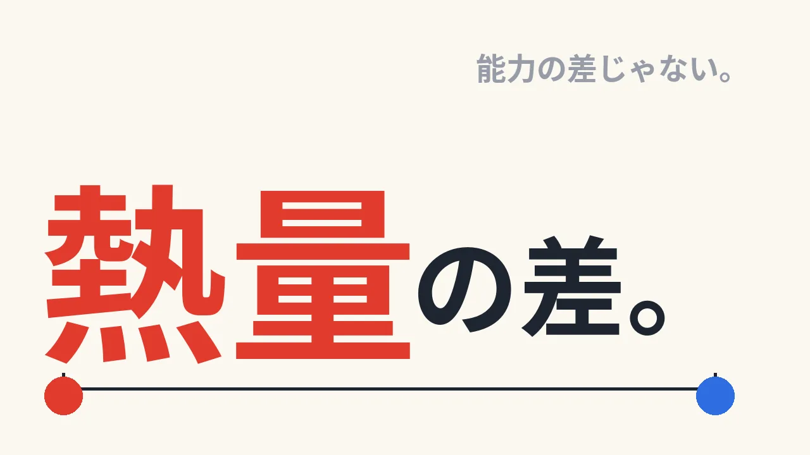
能力の差
じゃない。
熱量の差。
能力の差じゃない。
問題は、能力の高さじゃない。純粋な熱量の差。熱を持つ側ばかりが負担を背負って、いずれ力尽きる。
声 47字 ／ 画面 23字
はじめ：上段小・下段大の 2 段。おわり：赤の語が最大・下に測り線。「能力の差」は縮小して右上へ退く（主役の入れ替え）。
Dolly in で「じゃない。」に寄る → 「能力の差」を上へ押し出して退場、「熱量」が下から Crane up で立ち上がる。測り線は左から右へ線が描かれる。
他人の熱は変えられない。自分へ。
0:44–0:54 / 約10秒 ・ 転換（関心を自分で動かせることへ）

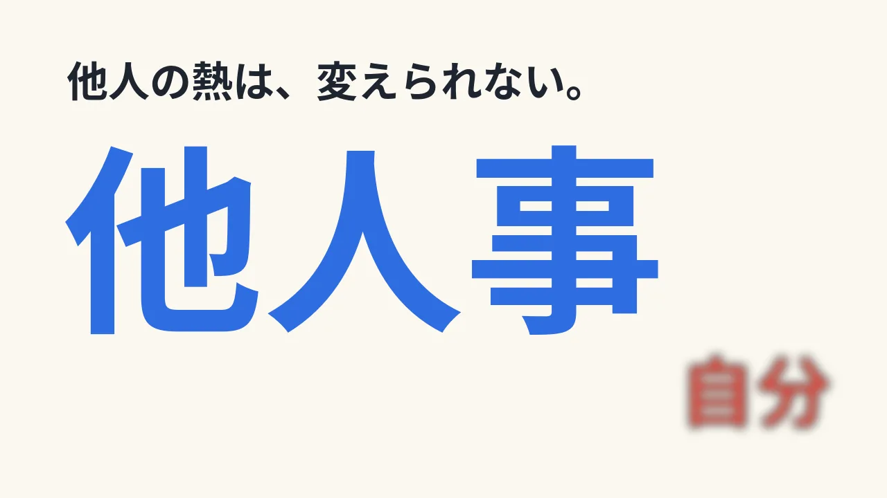

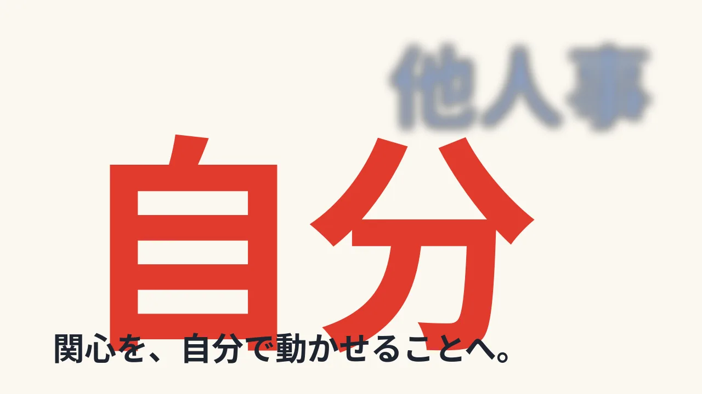
他人の熱は、変えられない。
他人事
自分
関心を、自分で動かせることへ。
他人の熱量は、外から変えられない。だから関心を、自分でコントロールできることへ向け直す。
声 44字 ／ 画面 33字
はじめ：青が主役・赤が副。おわり：赤が主役・青が副。同じ 2 語の大きさとピントを入れ替え、視線の行き先を反転する。
Rack focus（他人事 → 自分）に合わせて Dolly in。比較・因果の場面なので、二層の奥行きは 3D（three.js の被写界深度）を使ってよい。DOM の文字は CSS blur でも代替可。
試したいことを、いくつも持つ。
0:54–1:04 / 約10秒 ・ 対処（逃げ場としての複数の試したいこと）

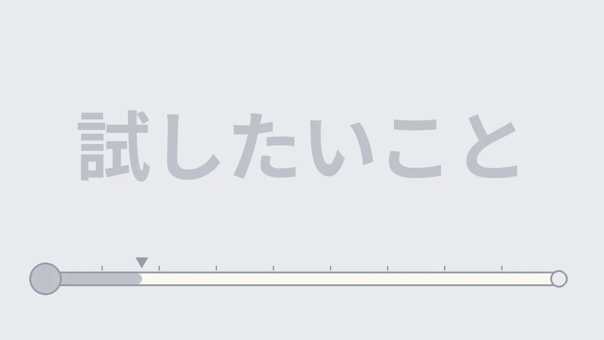

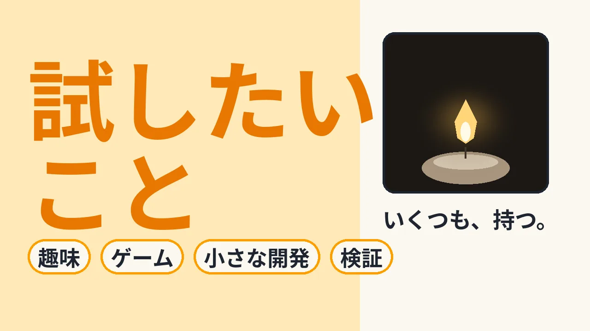
試したいこと
趣味
ゲーム
小さな開発
検証
いくつも、持つ。
試したいことを、いくつも持っておく。趣味でも、小さな開発でもいい。選択肢が手元にあれば、温度差から距離を置ける。
声 56字 ／ 画面 26字
はじめ：1 行・薄色・中央。おわり：2 行に折り、左に主文、右に実写の窓、下にチップが並ぶ 3 領域の構成。
Match cut：温度計の球（円）が右の窓（炎）に重なって切り替わる。Wipe（色が戻る：彩度の波が窓から外へ広がる）。チップは Speed ramp で左から次々に入る。
white-candle-02-07.mp4 の全5秒を、カット07後半の0:05–0:10（本編0:59–1:04、目安）に等速で使う。前半で主文とチップを組み替え、温度計の球から右の窓へ接続する。炎は素材本来のゆらぎを使い、窓・色面・文字の塊の運動で勢いを作る。速度変更、ループ、逆再生は不要。
右窓は約540×525px（1920×1080時）。中央を基準に左右を少し切り、炎の先端・芯・ろうそく上面を残す。窓の角丸は制作側でマスクする。文字は窓へ重ねない。一般的なイメージ映像として使い、筆者の部屋や体験の記録と結びつける説明は付けない。
何を始めたいか。起点力。
1:04–1:13 / 約9秒 ・ 展望（AI 時代の人の熱量）

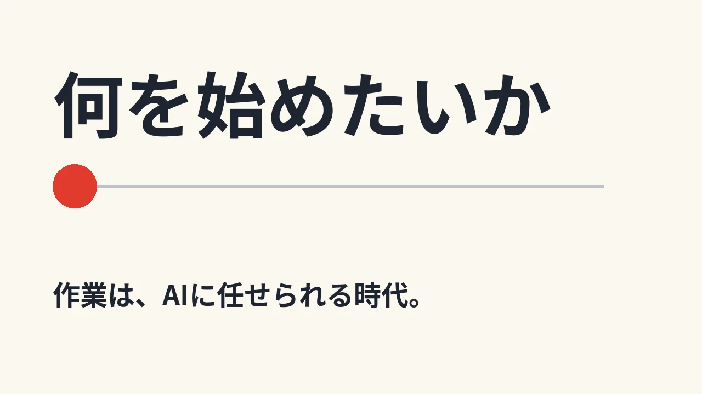

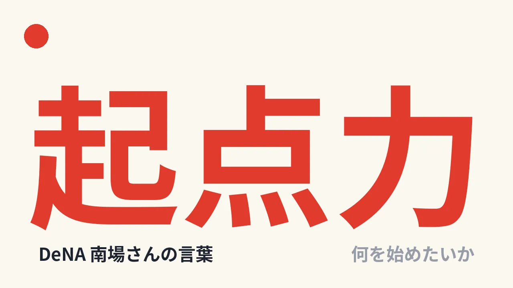
何を始めたいか
作業は、AIに任せられる時代。
起点力
DeNA 南場さんの言葉
何を始めたいか
作業をAIに任せられる時代。大事なのは、何を始めたいか。DeNA南場さんの言葉を借りると、起点力。
声 49字 ／ 画面 43字
はじめ：小さな語と一本の線。おわり：点の位置から 1 語が最大サイズで立ち上がる。出典名は小さな添え書きだけにする（記事の画面は見せない）。
Zoom in で点に寄る → Match cut で点が「起」の字の位置に置き換わる。線は Pan で右へ伸びてから収まる。
自分の熱量に、アクセルを踏もう。
1:13–1:21 / 約8秒 ・ 結び（筆者の言い切り）

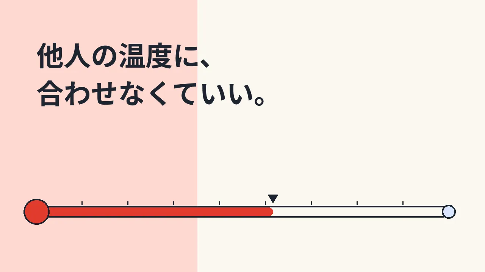

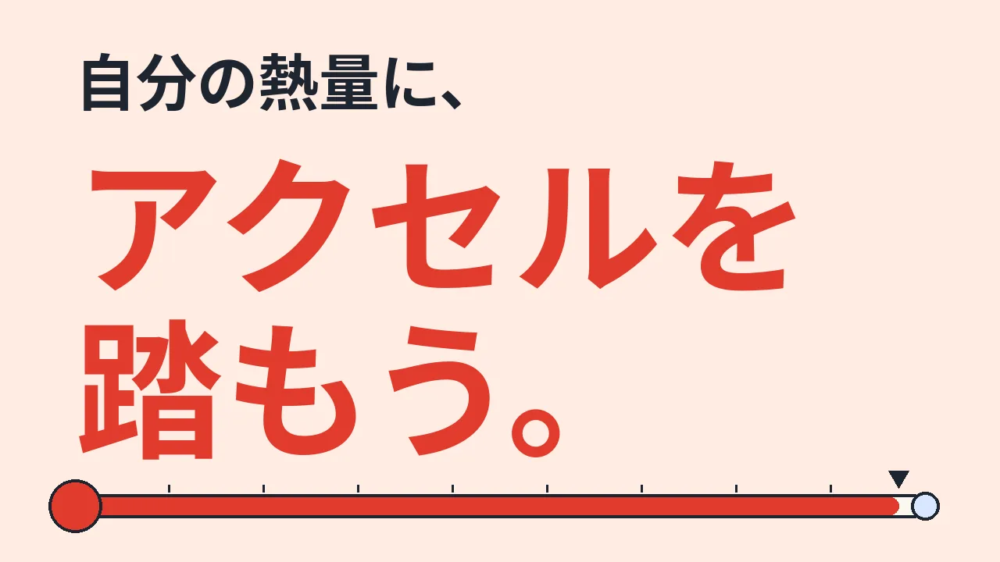
他人の温度に、
合わせなくていい。
自分の熱量に、
アクセルを
踏もう。
他人の温度に、無理に合わせなくていい。自分の起点力を信じて、自分の熱量にアクセルを踏もう。
声 45字 ／ 画面 32字
はじめ：小さな 2 行の否定の言葉。おわり：赤の大きな 2 行の肯定の言葉。言い切りの形に揃えて終える（疑問形では終えない）。
Whip pan（右へ）で温度計の水銀が右端まで走り（Speed ramp）、面が赤く満ちる。語は Dolly in。最後は線が右へ抜けて Smash cut でエンドロゴへ。
エンドロゴ
1:21–1:26.5 / 5.5秒 ・ エンド


ロゴのみ
なし（ロゴのみ。音楽を末尾まで覆う）
声 0字 ／ 画面 0字
ロゴ SVG の標準アニメーション（0–2.6 秒 o が落ちてバウンド／2.6–3.2 秒 左へスライド／3.0–4.0 秒 .work が出る）。完了後に 1.5 秒 保持（合計5.5秒）。
前カットの線が右へ抜けた直後に Smash cut。ロゴは Pan も Zoom もしない。
キャラ／記号・色の一覧（1 記号 = 1 意味）
| 記号・色 | 意味 | 使うカット |
|---|---|---|
| 赤（#e03a2e） | 自分の熱量（動かせるもの）。 | 01–09 |
| 青（#2f6fe4） | 他人事（動かせないもの）。「他人の熱」 | 01・03・04・05・06 |
| 琥珀（#e87800） | 試したいことが灯った状態（07 だけ）。 | 07 |
| 灰色 | 熱が削られた／灯る前の状態。 | 04・05・07 |
| 紙色 | 背景。意味は持たせない。 | 全カット |
| インク | 主文・声が運ぶ言葉。意味は持たせない。 | 全カット |
| 温度計（水銀の線） | 自分の熱量の量。伸びる＝熱量がある、縮む＝削られる。 | 01–05・07・09 |
| 赤い点（08） | 起点：自分の熱量が何かを始める位置。 | 08 |
| 二つの点を結ぶ線 | 二つの熱量の間の距離（温度差）。 | 02・05 |
| 球と壁 | 03 のみ：全力で打ち返す球と、動かない相手。 | 03 |
| 炎の窓 | 手元にある小さな熱（07 のみ）。 | 07 |
| ライム #d2ff1a | エンドのロゴ背景のみ。 | 10 |
数字は画面に出しません（数値の根拠が原稿にないため）。温度計の目盛りは数値ではなく、長さの比較だけを示します。
根拠との対応
主張・根拠・留保・画面の文言の対応表は references.md にあります。要点：
- 根拠は筆者の原稿（体験にもとづく見方）のみです。調査データの数値は使っていません。画面の数字もありません。
- 「だけじゃない」「どれだけやる気があっても」など、原稿の留保は残しています。
- DeNA 南場さんの「起点力」は、原稿が借りた言葉を、出典名つきで語としてだけ使います。記事の画面・肖像・引用文は使いません。
- 実写素材：Wikimedia Commons、Jahobr作の CC0 動画を同梱済み。取得先・仕様・ハッシュは references.md と asset-review.md に記載。
根拠と表現上の留保（開く）
体験にもとづく原稿なので、映像でも「誰にでも当てはまる」と言い切りません。他人を悪者にする表現を避け、03 の「本当に、本気なのだろうか」は、原稿どおり「疑問が湧く」という本人の感覚として声で示します。
採用素材・引き渡し
必要な画像・動画・フォント・ロゴは同梱済み。追加の人物・3D素材は不要。01–06・08–09の文字、面、線、球と壁は制作側で実装する。three.jsは06の奥行き・視線移動で検討し、文字自体はDOM層に保つ。非採用なら制作報告に理由を一行残す。
| 採用ファイル | 用途・区間 |
|---|---|
| 編集用ろうそく動画 | 800×600、30fps、音声なし、5秒。07後半の右窓。原本の2〜7秒を等速で切り出し。 |
| ろうそく原本 | 800×600、30fps、41.766秒。原本保管・再編集用。 |
| Noto Sans JP ／ OFL | 全編。見出し800〜900、補助文500〜700を目安に、paltと行マスクを使用。ロゴには適用しない。 |
| okady.work SVG | 10のみ。形・書体・色・比率を維持し、4秒の規定動作＋1.5秒保持。 |
| assets/storyboard/cut-01-start.webp〜cut-10-end.webp | 全20コマ。ライト背景の構図・接続資料。 |

素材の取得・採用・検査記録 ／ カット07の素材配置確認（5秒）
配置確認は1920×1080。絵コンテの文字・構図へ採用動画を合成したもので、本編アニメーションではない。窓・文字の動き、角丸の仕上げ、音楽同期は制作側で確認する。
音声の前提
ナレーションを使う想定の企画。今回は素材準備の依頼のため、音声生成は行っていない。声を採用する場合は、明示依頼後に制作側で生成・収録し、読みの尺に合わせて調整する。声を使わない場合は、03・04・06・07の因果と留保を画面へ戻して尺を再設計する。
08は「起点力」と出典名のみ。記事画面・肖像は用いない。09は筆者の結論で閉じる。「他人事」は本人にそう見えるという語りとして扱い、相手の内面を断定しない。
確認状態
| 項目 | 状態 |
|---|---|
| 絵コンテ 20 コマの見た目（コンタクトシートで目視） | 既存企画で確認済み：読めること、明るい背景、安全余白（1280×720 で左右 56px・上下 36px）内に文字が収まること。 |
| 本編の等速再生・動きの確認 | 本編は未制作。素材の5秒配置確認のみ、1倍再生で終了を確認。 |
| NANKA DEKIRU の効果の検討 | 実施済み。effects-direction.md に記録。動作は静止画と部品の確認まで。連続再生は未確認。 |
| 文字のはみ出し・重なりの機械的チェック | 制作側で実施（上の担当範囲）。 |
| 採用実写の取得・配置 | 原本と5秒の編集用素材を同梱。1920×1080の配置確認を作成し、1倍再生で終了を確認。検査範囲は asset-review.md を参照。 |
| ナレーションの音声・BGM | 音声未制作。ナレーションは明示依頼後、BGMは本書のブリーフで制作側が制作。 |
| 最終判断 | ユーザーが実際の速さで見て決める。 |